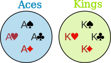
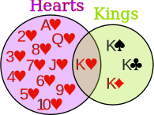

Probability: Types of Events
Life is full of random events!
You need to get a "feel" for them to be a smart and successful person.
The toss of a coin, throw of a dice and lottery draws are all examples of random events.
Events
When we say "Event" we mean one (or more) outcomes.
Example Events:
- Getting a Tail when tossing a coin is an event
- Rolling a "5" is an event.
An event can include several outcomes:
- Choosing a "King" from a deck of cards (any of the 4 Kings) is also an event
- Rolling an "even number" (2, 4 or 6) is an event
Events can be:
- Independent (each event is not affected by other events),
- Dependent (also called "Conditional", where an event is affected by other events)
- Mutually Exclusive (events can't happen at the same time)
Let's look at each of those types.
Independent Events
Events can be "Independent", meaning each event is not affected by any other events.
This is an important idea! A coin does not "know" that it came up heads before ... each toss of a coin is a perfect isolated thing.
Example: You toss a coin three times and it comes up "Heads" each time ... what is the chance that the next toss will also be a "Head"?
The chance is simply 1/2, or 50%, just like ANY OTHER toss of the coin.
What it did in the past will not affect the current toss!
Some people think "it is overdue for a Tail", but really truly the next toss of the coin is totally independent of any previous tosses.
Saying "a Tail is due", or "just one more go, my luck is due" is called The Gambler's Fallacy
Learn more at Independent Events.
Dependent Events
But some events can be "dependent" ... which means they can be affected by previous events.
Example: Drawing 2 Cards from a Deck
After taking one card from the deck there are less cards available, so the probabilities change!
Let's look at the chances of getting a King.
For the 1st card the chance of drawing a King is 4 out of 52
But for the 2nd card:
- If the 1st card was a King, then the 2nd card is less likely to be a King, as only 3 of the 51 cards left are Kings.
- If the 1st card was not a King, then the 2nd card is slightly more likely to be a King, as 4 of the 51 cards left are King.
This is because we are removing cards from the deck.
Replacement: When we put each card back after drawing it the chances don't change, as the events are independent.
Without Replacement: The chances will change, and the events are dependent.
You can learn more at Dependent Events: Conditional Probability
Tree Diagrams
When we have Dependent Events it helps to make a "Tree Diagram"
Example: Soccer Game
You are off to soccer, and love being the Goalkeeper, but that depends who is the Coach today:
- with Coach Sam your probability of being Goalkeeper is 0.5
- with Coach Alex your probability of being Goalkeeper is 0.3
Sam is Coach more often ... about 6 of every 10 games (a probability of 0.6).
Let's build the Tree Diagram!
Start with the Coaches. We know 0.6 for Sam, so it must be 0.4 for Alex (the probabilities must add to 1):

Then fill out the branches for Sam (0.5 Yes and 0.5 No), and then for Alex (0.3 Yes and 0.7 No):

Now it is neatly laid out we can calculate probabilities (read more at Tree Diagrams).
Mutually Exclusive
Mutually Exclusive means we can't get both events at the same time.
It is either one or the other, but not both
Examples:
- Turning left or right are Mutually Exclusive (you can't do both at the same time)
- Heads and Tails are Mutually Exclusive
- Kings and Aces are Mutually Exclusive
What isn't Mutually Exclusive
- Kings and Hearts are not Mutually Exclusive, because we can have a King of Hearts!
Like here:
|  |  | |
| Aces and Kings are Mutually Exclusive (can't be both) |
Hearts and Kings are not Mutually Exclusive (can be both) |
Read more at Mutually Exclusive Events